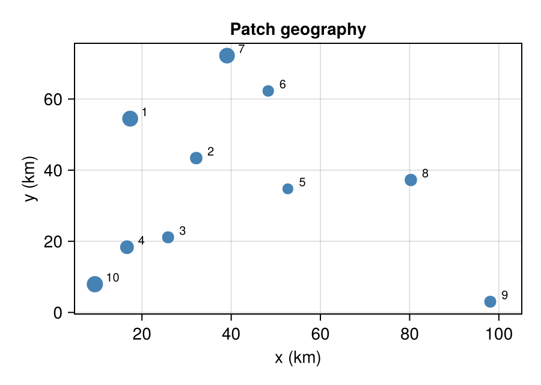
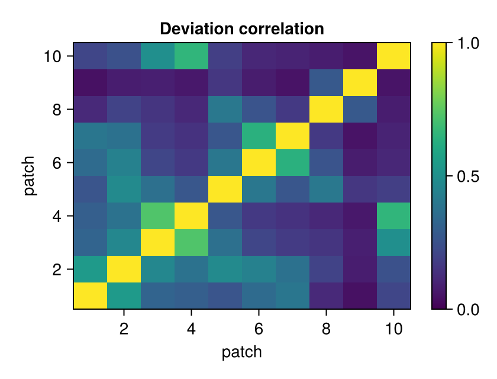

Multi-patch renewal modelling
The time-varying reproduction number $\mathcal{R}_t$ is the average number of new infections caused by each person infected at time $t$, and estimating it from surveillance data is a routine part of outbreak response. The renewal process model is the standard tool for this (Fraser 2007, Cori et al. 2013, Gostic et al. 2020), and it underpinned real-time transmission estimates throughout the COVID-19 pandemic (Abbott et al. 2020). This example builds a renewal model for daily case counts with $\mathcal{R}_t$ as the target estimand, then extends it to ten spatial patches coupled by a gravity mixing matrix. Each component is a small submodel or plain function, written as maths and then code. We simulate data from the prior, fit with NUTS, check parameter recovery, and forecast from a truncated fit, reusing the single-patch components in the multi-patch model. For model development and validation practice for models of this kind, see A Workflow for Infectious Disease Modelling.
using Wren, Wren.Samplersusing Distributionsusing CensoredDistributionsusing CairoMakie, PairPlotsusing LinearAlgebra: I, cholesky, Symmetric, normalizeusing Random, Statisticsusing Enzymeusing FlexiChains: summarystatsimport AbstractMCMCDelay distributions
Delays link every process in infectious disease surveillance. The generation time separates an infection from the infections it causes, the incubation period separates infection from symptom onset, and reporting delays separate events from their appearance in the data. Any model connecting transmission to observations is therefore built from delay distributions, and misspecifying them biases both the size and the timing of the resulting estimates (Gostic et al. 2020, Charniga et al. 2024).
Delays are continuous but observed at daily resolution, so they are doubly interval censored: the first event occurs at an unknown time within its day, and the second is only observed to the day. Ignoring this censoring biases delay estimates (Park et al. 2024). We use CensoredDistributions.jl to represent the censored process. For a delay distribution $f$, the mass on day $d$ is
\[p_d = \Pr(d \le P + T < d + 1 \mid P + T \le D), \qquad P \sim \mathrm{Uniform}(0, 1), \quad T \sim f,\]
where $P$ is the time of the first event within its day, $T$ is the delay to the second event, and the observable delay $P + T$ is truncated at $D$ days. double_interval_censored composes the censoring steps, and its pdf at integer $d$ gives the mass on $[d, d + 1)$, so the daily masses already sum to one under truncation:
function censored_pmf(dist; D, drop_zero=false) censored = double_interval_censored(dist; upper=Float64(D), interval=1.0) pmf = Vector{typeof(pdf(censored, 0.0))}(undef, D) for t in 1:D pmf[t] = pdf(censored, Float64(t - 1)) end if drop_zero pmf = pmf[2:end] ./ sum(pmf[2:end]) end return pmfendcensored_pmf (generic function with 1 method)We take the generation time distribution from the literature, $f_g = \mathrm{Gamma}(6.5, 0.62)$ truncated at $D = 14$ days, giving the daily mass function $g_s$. Its day-zero mass is dropped, since a same-day term would put $I_t$ on both sides of the renewal equation, and the remainder renormalised:
gen_pmf = censored_pmf(Gamma(6.5, 0.62); D=14, drop_zero=true)13-element Vector{Float64}:
0.026361445124839976
0.13900693991843655
0.2474343116456506
0.24509079663876357
0.1712156684230429
0.09526380990753634
0.04521689882317254
0.01909529422277372
0.0073745251642218
0.0026541167991533158
0.0009022931501097837
0.00029265202298622974
9.124815931261901e-5Fitting the reporting delay
Reporting delays are estimated from linelists, and near the analysis date the longest delays have not yet been reported, so each event carries its own right truncation (Park et al. 2024). We simulate three weeks of infections with growing incidence, keep the reports that arrive before the analysis day, and aggregate the linelist to unique delay and truncation pairs:
true_delay = LogNormal(1.5, 0.5)
analysis_day = 21
linelist_rng = Xoshiro(2)
p_days = rand(linelist_rng, Categorical(normalize(exp.(0.1 .* (0:20)), 1)), 400) .- 1
counts = Dict{Tuple{Int,Int},Int}()
for p in p_days
r = p + rand(linelist_rng) + rand(linelist_rng, true_delay)
r < analysis_day || continue
key = (floor(Int, r) - p, analysis_day - p)
counts[key] = get(counts, key, 0) + 1
end
strata = collect(keys(counts))
delay_obs = Float64.(first.(strata))
windows = Float64.(last.(strata))
wts = Float64.([counts[k] for k in strata])
sum(wts .* delay_obs) / sum(wts)The naive mean of the kept delays understates the true mean, mean(true_delay) ≈ 5.1 days, because long delays are missing by construction. Fitting the censored process with each stratum's own truncation corrects this,
\[\mu \sim \mathrm{Normal}(1, 0.5) \text{ on } [0, 3], \qquad \sigma \sim \mathrm{Normal}(0.5, 0.25) \text{ on } [0.1, 2], \qquad t_j \sim \mathrm{DoubleIntervalCensored}\!\left(\mathrm{LogNormal}(\mu, \sigma); D_j\right),\]
where $t_j$ is the observed delay of stratum $j$, $D_j$ runs from its primary event day to the analysis day, and each stratum's likelihood is weighted by its count with weight. The bounded priors keep every warmup proposal in a numerically safe region:
@wren function delay_model(mu_prior, sigma_prior, windows, weights, delays, D)
mu ~ mu_prior
sigma ~ sigma_prior
for j in eachindex(delays)
d = double_interval_censored(LogNormal(mu, sigma); upper=windows[j], interval=1.0)
delays[j] ~ weight(d, weights[j])
end
return censored_pmf(LogNormal(mu, sigma); D=D)
end
delay_fitted =
delay_model(
truncated(Normal(1, 0.5); lower=0, upper=3),
truncated(Normal(0.5, 0.25); lower=0.1, upper=2),
windows,
wts,
zeros(length(strata)),
15,
) | VarNamedTuple(; delays=delay_obs)
delay_chn = nuts(Xoshiro(1), delay_fitted, 500, 2; progress=false)
summarystats(delay_chn)The model returns the daily mass function implied by its parameters, so a conditioned instance can slot straight into a larger composition. Here we instead fix the reporting delay $p_d$ at its posterior means, and return to the alternatives at the end:
mu_hat = mean(delay_chn[@vn(mu)])
sigma_hat = mean(delay_chn[@vn(sigma)])
delay_pmf = censored_pmf(LogNormal(mu_hat, sigma_hat); D=15)let
fig = Figure(; size=(700, 300))
ax1 = Axis(fig[1, 1]; xlabel="days", ylabel="probability", title="Generation time")
barplot!(ax1, 1:length(gen_pmf), gen_pmf; color=:steelblue)
ax2 = Axis(fig[1, 2]; xlabel="days", title="Fitted reporting delay")
barplot!(ax2, 0:(length(delay_pmf)-1), delay_pmf; color=:steelblue)
fig
endA single-patch model
Process model
The log reproduction number follows a random walk with an estimated step size $\sigma$,
\[Z_1 \sim \mathrm{Normal}(\mu_0, \sigma_0), \qquad Z_t = Z_{t-1} + \sigma \varepsilon_t, \quad \varepsilon_t \sim \mathrm{Normal}(0, 1), \qquad \mathcal{R}_t = \exp(Z_t).\]
As a submodel this is a function of the length of the walk and the two priors:
@wren function random_walk(n, init_prior, step_prior) init ~ init_prior sigma ~ step_prior eps = zeros(n - 1) @plate for i in 1:(n-1) eps[i] ~ Normal() end return vcat(init, init .+ sigma .* cumsum(eps))endrandom_walk (generic function with 1 method)@plate samples the innovations as one vectorised block. The return value is the whole walk, which is what a parent model consumes. We use
\[\mu_0 = \log 1.3, \qquad \sigma_0 = 0.1, \qquad \sigma \sim \mathrm{Normal}^{+}(0, 0.05),\]
where $\mathrm{Normal}^{+}$ is a normal truncated to be positive. Like any Wren model the submodel can be sampled from directly:
T = 56rt_priors = (Normal(log(1.3), 0.1), truncated(Normal(0, 0.05); lower=0))rt_model = random_walk(T, rt_priors...)rand(Xoshiro(1), rt_model)VarNamedTuple
├─ init => 0.25530595057210126
├─ sigma => 0.026573837689159815
└─ eps => PartialArray size=(55,) data::Vector{Float64}
├─ (1,) => -0.5958244153640522
├─ (2,) => 0.04665938957338174
│ ⋮ (52 more set indices)
└─ (55,) => -1.3840740333021035It can also be conditioned on its own parameters and sampled again, which is useful for checking a component in isolation:
rand(Xoshiro(1), rt_model | VarNamedTuple(; sigma=0.1))VarNamedTuple
├─ init => 0.25530595057210126
└─ eps => PartialArray size=(55,) data::Vector{Float64}
├─ (1,) => 0.2784058141640002
├─ (2,) => -0.5958244153640522
│ ⋮ (52 more set indices)
└─ (55,) => -0.7531338971077326Daily infection incidence $I_t$ follows the renewal process model (Fraser 2007, Cori et al. 2013),
\[I_t = \mathcal{R}_t \sum_{s \ge 1} I_{t-s} g_s,\]
with infections before the first time point back-extrapolated from $I_0$ at the exponential growth rate $r$ implied by $\mathcal{R}_1$,
\[I_u = I_0 e^{r u} \ (u \le 0), \qquad \mathcal{R}_1 \sum_{s \ge 1} g_s e^{-r s} = 1, \qquad \log I_0 \sim \mathrm{Normal}(\log 50, 0.5).\]
The second relation links growth rates and reproduction numbers through the generation time distribution (Wallinga and Lipsitch 2007); R_to_r solves it with a short Newton iteration. The recursion is a plain function. We use explicit loops rather than generator sums, which keeps the code fast under Enzyme's reverse-mode AD. The clamp on $r$ and the cap on infections keep the log density finite at the extreme parameter values explored during warmup, where the exponential growth would otherwise overflow:
function R_to_r(R, gen_pmf; newton_steps=2) mean_gen = zero(eltype(gen_pmf)) for (s, g) in enumerate(gen_pmf) mean_gen += s * g end r = clamp((R - 1) / (R * mean_gen), -2.0, 2.0) for _ in 1:newton_steps f = zero(r) df = zero(r) for (s, g) in enumerate(gen_pmf) e = exp(-r * s) f += g * e df -= s * g * e end r = clamp(r - (R * f - 1) / (R * df), -2.0, 2.0) end return rendfunction renew(I0, R::AbstractVector, gen_pmf) r = R_to_r(R[1], gen_pmf) I_t = similar(R) for t in eachindex(R) pressure = zero(eltype(R)) for (s, g) in enumerate(gen_pmf) past = t - s >= 1 ? I_t[t-s] : I0 * exp(r * (t - s)) pressure += g * past end I_t[t] = min(R[t] * pressure, 1e15) end return I_tendrenew (generic function with 1 method)Observation model
The observation model relates infection incidence to reported cases through the reporting delay and observation noise. Expected reported cases convolve infections with the reporting delay distribution, and observed cases are negative binomial with overdispersion controlled by a cluster factor $\alpha = c^2$, as in EpiNow2 (Abbott et al. 2020),
\[Y_t = \sum_{d=0}^{\min(D - 1, t - 1)} p_d I_{t-d}, \qquad y_t \sim \mathrm{NegBin}\!\left(\mathrm{mean} = Y_t,\ \mathrm{var} = Y_t + \alpha Y_t^2\right), \qquad c \sim \mathrm{Normal}^{+}(0, 0.1),\]
$y_t$ is cases in the code and $c$ is cluster. Infections before the first day are not convolved.
function delay_convolve(x::AbstractVector, pmf) y = similar(x) for t in eachindex(x) acc = zero(eltype(x)) for d in 0:min(length(pmf)-1, t-1) acc += pmf[d+1] * x[t-d] end y[t] = acc end return yendfunction NegativeBinomialMeanClust(mu, alpha) var = mu + alpha * mu^2 p = mu / var r = 1 / alpha return NegativeBinomial(r, p; check_args=false)endNegativeBinomialMeanClust (generic function with 1 method)check_args=false serves the same purpose as the clamp and cap above, giving extreme proposals a log density of $-\infty$ rather than an error.
The full model
The full model composes the process and observation components. The reproduction number process enters as a submodel argument, so it can be swapped without touching the rest of the model. The cases argument only declares the shape of the cases array (see Syntax and semantics), and data enters later by conditioning:
@wren function renewal_cases(rt_model, gen_pmf, delay_pmf, init_prior, cluster_prior, cases)
Z_t = (log_Rt ~ rt_model)
log_I0 ~ init_prior
I_t = renew(exp(log_I0), exp.(Z_t), gen_pmf)
Y_t = delay_convolve(I_t, delay_pmf) .+ 1e-6
cluster ~ cluster_prior
for t in eachindex(cases)
cases[t] ~ NegativeBinomialMeanClust(Y_t[t], cluster^2)
end
return (; I_t, Y_t, R=exp.(Z_t))
end
single_model(rt, n) = renewal_cases(
rt,
gen_pmf,
delay_pmf,
Normal(log(50), 0.5),
truncated(Normal(0, 0.1); lower=0),
zeros(Int, n),
)
model = single_model(rt_model, T)The small constant added to $Y_t$ keeps the observation mean strictly positive on early days, where almost none of the reporting delay mass has accrued. single_model fixes the delays and priors once, so the forecasting section can rebuild the same composition at another horizon.
Prior predictive checks
Prior predictive checks simulate data from the prior to check that model behaviour is epidemiologically plausible before fitting. Because cases is latent until we condition on it, sampling from the prior simulates complete data sets:
prior_chn = prior(Xoshiro(1), model, 500; progress=false)
let
fig = Figure(; size=(700, 350))
ax = Axis(fig[1, 1]; xlabel="day", ylabel="reported cases", yscale=log10)
for draw in vec(prior_chn[@vn(cases)])[1:100]
lines!(ax, max.(draw, 0.5); color=(:grey, 0.15))
end
fig
endSimulated epidemics mostly grow slowly from around 50 reported cases a day, but a minority grow implausibly large. In a real analysis this check would motivate tightening the reproduction number priors; here we accept it and move on.
Fitting and parameter recovery
Fitting simulated data and checking that the known parameters are recovered validates the model and the inference together. We take one prior draw as the truth and condition the model on its simulated cases with |:
truth = rand(Xoshiro(132), model)
cases_data = truth[@vn(cases)]
fitted = model | VarNamedTuple(; cases=cases_data)
chn = nuts(Xoshiro(1), fitted, 1000, 4; progress=false)
chnsummarystats checks the computation before we interpret anything. Effective sample sizes and $\hat{R}$ near one show the chains mixed:
pp_keys = [@vn(log_Rt.init), @vn(log_Rt.sigma), @vn(log_I0), @vn(cluster)]
summarystats(chn[pp_keys])pairplot compares the posterior against the prior for the four scalar parameters, with the true values overlaid:
truth_values(params, keys) = NamedTuple(Symbol(string(k)) => params[k] for k in keys)
pairplot(
PairPlots.Series(chn[pp_keys]; label="posterior", color=(:steelblue, 0.6)),
PairPlots.Series(prior_chn[pp_keys]; label="prior", color=(:grey, 0.4)),
PairPlots.Truth(truth_values(truth, pp_keys); label="true values"),
)To check recovery of the latent process we compare reproduction number trajectories. A model can be re-run at any parameter set using evaluate with FromParams, which returns the model's return value at those parameters. The same helper therefore gives the trajectory at the truth and at each posterior draw, with to_samples converting the chain back to parameter sets:
function return_values(model, params)
retval, _ = evaluate(
model,
FromParams(params),
OriginalSpace(),
Wren.AccumulatorTuple(Wren.ParamsAccumulator()),
)
return retval
end
posterior_returns(model, chn; thin=10) = [
return_values(model, vnt) for
vnt in vec(AbstractMCMC.to_samples(VarNamedTuple, chn)[1:thin:end, :])
]
R_post = stack(r.R for r in posterior_returns(fitted, chn))
R_true = return_values(model, truth).R
function ci_bands!(ax, draws)
for (w, a) in zip((0.9, 0.6, 0.3), (0.2, 0.35, 0.5))
lo = [quantile(view(draws, t, :), 0.5 - w / 2) for t in axes(draws, 1)]
hi = [quantile(view(draws, t, :), 0.5 + w / 2) for t in axes(draws, 1)]
band!(
ax,
axes(draws, 1),
lo,
hi;
color=(:steelblue, a),
label="$(round(Int, 100w))% CrI",
)
end
end
let
fig = Figure(; size=(700, 350))
ax = Axis(fig[1, 1]; xlabel="day", ylabel="reproduction number")
ci_bands!(ax, R_post)
lines!(ax, R_true; color=:firebrick, linewidth=2, label="truth")
axislegend(ax)
fig
endPosteriors are summarised as nested 30%, 60%, and 90% credible interval bands.
Forecasting
Fitting to a truncated series and simulating forward turns the same model into a forecast. We refit to the first 42 days, then re-run a 56-day model at each posterior draw. FromParams supplies every parameter the fit knows, and its FromPrior fallback draws what is missing, here the innovations beyond the fitted window and all of the cases. The bands below are therefore posterior predictive over the fitted window and forecasts beyond it. The plated walk samples its innovations as one block that a shorter fit cannot partially fill, so the forecast uses a variant without @plate, where each innovation is its own variable:
@wren function random_walk_forecast(n, init_prior, step_prior)
init ~ init_prior
sigma ~ step_prior
eps = zeros(n - 1)
for i in eachindex(eps)
eps[i] ~ Normal()
end
return vcat(init, init .+ sigma .* cumsum(eps))
end
T_obs = 42
fit42 =
single_model(random_walk(T_obs, rt_priors...), T_obs) |
VarNamedTuple(; cases=cases_data[1:T_obs])
chn42 = nuts(Xoshiro(1), fit42, 500, 2; progress=false)
forecast_model = single_model(random_walk_forecast(T, rt_priors...), T)
forecast = stack(
parameters(
Draw(FromParams(vnt, FromPrior()), forecast_model; include_log_probs=false),
)[@vn(cases)] for
vnt in vec(AbstractMCMC.to_samples(VarNamedTuple, chn42)[1:5:end, :])
)
summarystats(chn42[pp_keys])The last fortnight of the data, held out from the fit, sits inside the forecast intervals:
let
fig = Figure(; size=(700, 350))
ax = Axis(fig[1, 1]; xlabel="day", ylabel="reported cases")
ci_bands!(ax, forecast)
scatter!(
ax,
1:T_obs,
cases_data[1:T_obs];
color=:black,
markersize=5,
label="fitted data",
)
scatter!(
ax,
(T_obs+1):T,
cases_data[(T_obs+1):T];
color=:firebrick,
markersize=6,
label="held out",
)
vlines!(ax, [T_obs + 0.5]; color=:grey, linestyle=:dash)
axislegend(ax; position=:lt)
fig
endTen coupled patches
Surveillance data are often spatially stratified. We extend the process model to ten patches whose infections mix, reusing the components above.
Gravity mixing
Each patch has a population and a location. The force of infection that patch $g$ receives mixes over source patches,
\[\Lambda_{g,t} = \sum_h K_{gh} \sum_s g_s I_{h,t-s}, \qquad I_{g,t} = \mathcal{R}_{g,t} \Lambda_{g,t},\]
with a gravity mixing matrix (Xia et al. 2004)
\[K_{gh} \propto \frac{\tilde p_g \tilde p_h}{d_{gh}^{\gamma}} \ (g \ne h), \qquad K_{gg} \propto 1, \qquad \sum_h K_{gh} = 1,\]
where $\tilde p$ is population in units of the mean and $d_{gh}$ is the distance between patches. Rows are normalised to sum to one so that $K$ only says where each patch's force of infection comes from; its overall scale belongs to $\mathcal{R}_t$, which would otherwise be confounded with it. The distance exponent is estimated with prior $\gamma \sim \mathrm{Normal}^{+}(1.5, 0.5)$:
function gravity(pop, dist; gamma, within=1.0) n = length(pop) mean_pop = sum(pop) / n K = Matrix{promote_type(typeof(gamma), eltype(pop))}(undef, n, n) for h in 1:n, g in 1:n K[g, h] = if g == h within else (pop[g] / mean_pop) * (pop[h] / mean_pop) / dist[g, h]^gamma end end return K ./ sum(K; dims=2)end@wren function gravity_mixing(pop, dist, gamma_prior) gamma ~ gamma_prior return gravity(pop, dist; gamma)endrng = Xoshiro(42)n_patches = 10coords = 100 .* rand(rng, n_patches, 2)pop = rand(rng, LogNormal(log(1e5), 0.75), n_patches)dist = [sqrt(sum(abs2, coords[g, :] .- coords[h, :])) for g in 1:n_patches, h in 1:n_patches]marker_size = 8 .+ 8 .* sqrt.(pop ./ (sum(pop) / n_patches))round.(Int, pop)10-element Vector{Int64}:
262525
100628
85031
154546
51738
68184
250684
96176
82073
282060Marker area scales with population:
let fig = Figure(; size=(450, 320)) ax = Axis(fig[1, 1]; xlabel="x (km)", ylabel="y (km)", title="Patch geography") scatter!(ax, coords[:, 1], coords[:, 2]; markersize=marker_size, color=:steelblue) text!(ax, coords[:, 1] .+ 2.5, coords[:, 2]; text=string.(1:n_patches), fontsize=10) figend
Spatially and temporally correlated deviations
Patch reproduction numbers share the random walk from the single-patch model and add a patch deviation that evolves over weeks, so patches are coupled without moving in lockstep. The deviation follows a damped random walk across weeks whose innovations are correlated across space,
\[\log \mathcal{R}_{g,t} = Z_t + \delta_{g,w(t)}, \qquad \boldsymbol{\delta}_1 = \sigma_\delta L \boldsymbol{\eta}_1, \qquad \boldsymbol{\delta}_w = \rho \boldsymbol{\delta}_{w-1} + \sigma_\delta \sqrt{1 - \rho^2}\, L \boldsymbol{\eta}_w,\]
\[\boldsymbol{\eta}_w \sim \mathrm{MvNormal}(\mathbf{0}, I), \qquad L L^\top = C, \qquad C_{gh} = \exp(-d_{gh} / \ell),\]
where $w(t)$ is the week of day $t$. Nearby patches drift together, individual patches diverge, and the damping $\rho$ pulls local departures back towards the shared trend. We fix the correlation length $\ell = 30$ and estimate $\sigma_\delta \sim \mathrm{Normal}^{+}(0, 0.2)$ and $\rho \sim \mathrm{Normal}(0.8, 0.1)$ truncated to $[0, 1]$:
@wren function spatial_deviations(L_corr, n_weeks, sd_prior, damp_prior) sigma ~ sd_prior rho ~ damp_prior n = size(L_corr, 1) eta ~ MvNormal(zeros(n * n_weeks), I) E = reshape(eta, n, n_weeks) delta = similar(E) prev = sigma .* (L_corr * E[:, 1]) delta[:, 1] = prev scale = sigma * sqrt(1 - rho^2) for w in 2:n_weeks prev = rho .* prev .+ scale .* (L_corr * E[:, w]) delta[:, w] = prev end return deltaendfunction expand_weeks(delta_w::AbstractMatrix, T) P, W = size(delta_w) out = similar(delta_w, T, P) for g in 1:P, t in 1:T out[t, g] = delta_w[g, fld1(t, 7)] end return outendell = 30.0L_corr = cholesky(Symmetric(exp.(-dist ./ ell))).Llet fig = Figure(; size=(420, 320)) ax = Axis(fig[1, 1]; xlabel="patch", ylabel="patch", title="Deviation correlation") hm = heatmap!(ax, exp.(-dist ./ ell); colorrange=(0, 1)) Colorbar(fig[1, 2], hm) figend
Coupled process and observation models
The renewal recursion gains a method for a matrix of reproduction numbers (time by patch) and the mixing matrix, with per-patch growth rates for the seeding, and the convolution maps over patches:
function renew(I0::AbstractVector, R::AbstractMatrix, gen_pmf, K::AbstractMatrix) T, P = size(R) I_t = similar(R) lambda = similar(I0) growth = similar(I0) for h in 1:P growth[h] = R_to_r(R[1, h], gen_pmf) end for t in 1:T for h in 1:P acc = zero(eltype(R)) for (s, g) in enumerate(gen_pmf) past = t - s >= 1 ? I_t[t-s, h] : I0[h] * exp(growth[h] * (t - s)) acc += g * past end lambda[h] = acc end for g in 1:P pressure = zero(eltype(R)) for h in 1:P pressure += K[g, h] * lambda[h] end I_t[t, g] = min(R[t, g] * pressure, 1e15) end end return I_tendfunction delay_convolve(x::AbstractMatrix, pmf) y = similar(x) for g in axes(x, 2) y[:, g] = delay_convolve(x[:, g], pmf) end return yenddelay_convolve (generic function with 2 methods)The full model composes the three submodels. rt_model is the same random-walk submodel used in the single-patch model, the delay and observation components are reused directly, and the seeding carries over with a patch-level prior, $\log I_{0,g} \sim \mathrm{Normal}(\log 20, 0.5)$:
@wren function patch_renewal_cases(
rt_model,
dev_model,
mix_model,
gen_pmf,
delay_pmf,
seed_prior,
cluster_prior,
cases,
)
Z_t = (log_Rt ~ rt_model)
delta = (patch_dev ~ dev_model)
K_mix = (mixing ~ mix_model)
log_I0 ~ seed_prior
R = exp.(Z_t .+ expand_weeks(delta, length(Z_t)))
I_t = renew(exp.(log_I0), R, gen_pmf, K_mix)
Y_t = delay_convolve(I_t, delay_pmf) .+ 1e-6
cluster ~ cluster_prior
for g in axes(cases, 2), t in axes(cases, 1)
cases[t, g] ~ NegativeBinomialMeanClust(Y_t[t, g], cluster^2)
end
return (; I_t, Y_t, R, delta, K_mix)
end
n_weeks = cld(T, 7)
patch_model = patch_renewal_cases(
rt_model,
spatial_deviations(
L_corr,
n_weeks,
truncated(Normal(0, 0.2); lower=0),
truncated(Normal(0.8, 0.1); lower=0, upper=1),
),
gravity_mixing(pop, dist, truncated(Normal(1.5, 0.5); lower=0)),
gen_pmf,
delay_pmf,
MvNormal(fill(log(20), n_patches), 0.25 * I),
truncated(Normal(0, 0.1); lower=0),
zeros(Int, T, n_patches),
)Simulated data
One prior draw now simulates an epidemic across all ten patches:
patch_truth = rand(Xoshiro(75), patch_model)
patch_cases = patch_truth[@vn(cases)]
let
fig = Figure(; size=(700, 600))
for g in 1:n_patches
ax = Axis(
fig[fld1(g, 2), mod1(g, 2)];
title="patch $g",
titlesize=10,
yticks=LinearTicks(3),
)
lines!(ax, patch_cases[:, g]; color=:steelblue)
end
fig
endFitting the coupled model
patch_fitted = patch_model | VarNamedTuple(; cases=patch_cases)
patch_chn = nuts(Xoshiro(1), patch_fitted, 500, 4; progress=false)
patch_chnThe same computational checks apply:
patch_keys = [
@vn(log_Rt.sigma),
@vn(patch_dev.sigma),
@vn(patch_dev.rho),
@vn(mixing.gamma),
@vn(cluster),
]
summarystats(patch_chn[patch_keys])The pairplot again compares prior and posterior, now including the spatial parameters:
patch_prior_chn = prior(Xoshiro(1), patch_model, 500; progress=false)
pairplot(
PairPlots.Series(patch_chn[patch_keys]; label="posterior", color=(:steelblue, 0.6)),
PairPlots.Series(patch_prior_chn[patch_keys]; label="prior", color=(:grey, 0.4)),
PairPlots.Truth(truth_values(patch_truth, patch_keys); label="true values"),
)The random walk step size, deviation scale, and cluster factor update strongly. The distance exponent $\gamma$ updates less because a single epidemic contains limited information about mixing. Identifying this before using such a model on real data is one purpose of these checks.
The mixing matrix and deviations are return values of the model, so the same helpers recover their posteriors. Because distance enters as $d^{-\gamma}$, most transmission is within patches, so the between-patch flows below are scaled relative to the largest one. Flows concentrate between large, nearby patches, and the deviations, averaged over weeks, vary smoothly in space, as the distance-decaying prior intends:
patch_rets = posterior_returns(patch_fitted, patch_chn)
let
delta_hat = vec(mean(stack(r.delta for r in patch_rets); dims=(2, 3)))
K_hat = dropdims(mean(stack(r.K_mix for r in patch_rets); dims=3); dims=3)
lim = maximum(abs, delta_hat)
w_max = maximum(K_hat[g, h] for g in 1:n_patches, h in 1:n_patches if g != h)
fig = Figure(; size=(700, 320))
ax1 = Axis(fig[1, 1]; xlabel="x (km)", ylabel="y (km)", title="Posterior mean mixing")
for g in 1:n_patches, h in 1:n_patches
w = K_hat[g, h] / w_max
(g == h || w < 0.05) && continue
lines!(
ax1,
[coords[g, 1], coords[h, 1]],
[coords[g, 2], coords[h, 2]];
color=(:grey, 0.8w),
linewidth=5w,
)
end
scatter!(ax1, coords[:, 1], coords[:, 2]; markersize=marker_size, color=:steelblue)
ax2 = Axis(fig[1, 2]; xlabel="x (km)", title="Posterior mean deviation")
sc = scatter!(
ax2,
coords[:, 1],
coords[:, 2];
markersize=marker_size,
color=delta_hat,
colormap=CairoMakie.Reverse(:RdBu),
colorrange=(-lim, lim),
)
Colorbar(fig[1, 3], sc; label="δ")
fig
endPatch reproduction numbers are recovered with the same helpers as in the single-patch model:
R_patch = stack(r.R for r in patch_rets)
R_patch_true = return_values(patch_model, patch_truth).R
let
fig = Figure(; size=(700, 600))
for g in 1:n_patches
ax = Axis(
fig[fld1(g, 2), mod1(g, 2)];
title="patch $g",
titlesize=10,
yticks=LinearTicks(3),
)
ci_bands!(ax, view(R_patch, :, g, :))
lines!(ax, R_patch_true[:, g]; color=:firebrick)
end
fig
endWhere next
In practice model development loops. Prior predictive checks suggest prior changes, fit diagnostics suggest model changes, and components are swapped without rewriting the rest. The submodels here are small on purpose, so each extension below is a new component slotted into the same composition:
- Delay uncertainty: the reporting delay is fixed at its posterior means; an informed prior from the delay posterior, or joint fitting by passing the linelist-conditioned
delay_modelinto the composition in place of the fixed $p_d$, would propagate it. - Right truncation and nowcasting, so recent partially reported days can be fitted rather than discarded, as in epinowcast.
- A Gaussian process reproduction number model in place of the random walk, as in EpiNow2.
- Additional data streams observed from the same infection process, for example wastewater concentrations as in EpiSewer.
See A Workflow for Infectious Disease Modelling for the development loop in full.